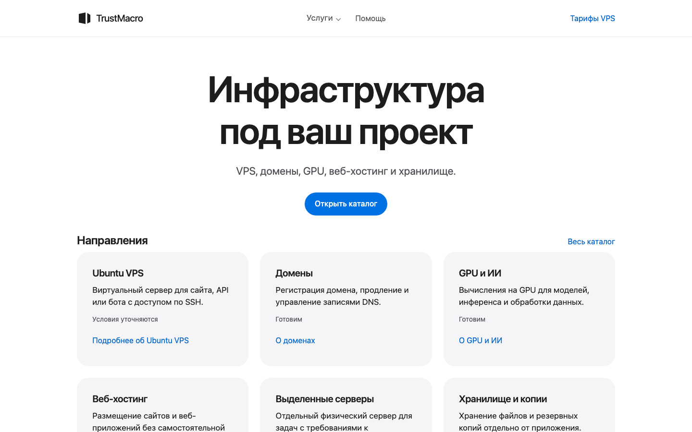

The catalogue covers VPS, domains, GPU and other services. Ubuntu VPS is the first service in preparation.
Hosting · Web platform
TrustMacro — hosting platform
A project by the Hosting team. The storefront helps visitors choose an Ubuntu VPS for a website, API or bot. The sample order runs from configuration to the server page and a support request.

Project status
Public demo
The storefront is live. Sales are in preparation.
On 13 November, WebKit at 390 px followed the flow from configuration through order history and the sample support request.
The order uses sample data and simulated payment. Sales have yet to open.
Sample order
From configuration to support
Choose a configuration
Select an Ubuntu VPS for the workload.
Review the order
See what the service includes and follow the sample payment.
Open the VPS page
Review server settings and service status using sample data.
Find the order history
Find the transaction and open the sample request for that server.
Service page
Configuration and status appear in one place.
Order history
The simulated payment appears in the history.
Sample conversation
The server page links to a sample support conversation.